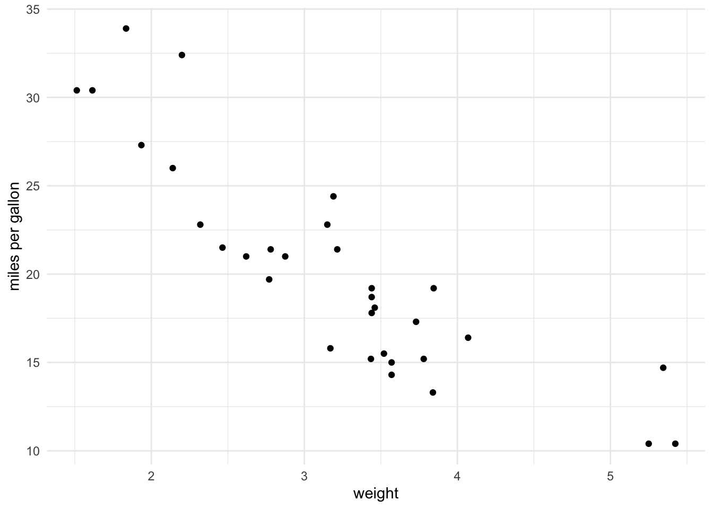

This should be done at the top of your quarto doc, after YAML.
Code
```{r}#| label: setup#| message: false#| warning: false# load your librarieslibrary(tidyverse)library(knitr)library(readxl)# reading in data# example: mydata <- read.csv("path/to/data.csv")my_data <- mtcarsmy_real_data <-read_excel("~/Downloads/TCRMP_SiteMetadata.xlsx")# the ~/ tab went to my computer directory, a double period (../ tab) would take me to my project directoryhead(my_real_data)```
# A tibble: 6 × 9
Location Code Island Latitude Longitude ReefComplex Depth YearAdded
<chr> <chr> <chr> <dbl> <dbl> <chr> <dbl> <dbl>
1 Black Point BPT STT 18.3 -65.0 Nearshore 9 2003
2 Botany Bay BTY STT 18.4 -65.0 Nearshore 8 2002
3 Brewers Bay BWR STT 18.3 -65.0 Nearshore 6 2002
4 Buck Island STT BIT STT 18.3 -64.9 Offshore 14 2005
5 Buck Island STX BIX STX 17.8 -64.6 Offshore 15 2002
6 Buck Island STX D… BID STX 17.8 -64.6 Mesophotic 33 2017
# ℹ 1 more variable: Permanentized <chr>
7 inserting figures and figure captions
Code
ggplot(my_data, aes(x = wt, y = mpg))+geom_point() +theme_minimal() +labs(x ="weight", y ="miles per gallon")

Figure 1: Scatterplot of Car Weight vs. MPG
Tip
notice how we labeled figure above with option #| labes: fig-mpg we can then reference figure in our text as shown in Figure 1, heavier cars have lower mpg.
#Table outputs
Code
```{r}#| label: tbl-summary#| tbl-cap: "average mpg by cylinder count" my_data %>%group_by(cyl) %>%summarise(avg_mpg =mean(mpg)) %>%kable() #kable makes a clean markdown table```
Table 1: average mpg by cylinder count
cyl
avg_mpg
4
26.66364
6
19.74286
8
15.10000
Tip
this time we labeled the table above with the option #| label: tbl-summary
Smith, T. B., M. E. Brandt, J. M. Calnan, R. S. Nemeth, J. Blondeau, E. Kadison, M. Taylor, and P. Rothenberger. 2013. “Convergent Mortality Responses of Caribbean Coral Species to Seawater Warming.”Ecosphere 4 (7): 1–40. https://doi.org/10.1890/es13-00107.1.